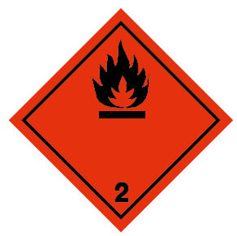
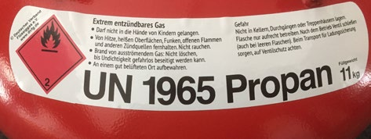
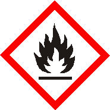

Im Folgenden werden die wesentlichen für die Beförderung von Flüssiggasflaschen (UN 1965), Druckgaspackungen (UN 1950) und Einwegkartuschen (UN 2037) anzuwendenden Vorschriften des ADR und der Gefahrstoffverordnung aufgeführt. Für jede Vorschrift ist angegeben, ob sie auch bei der Beförderung einer Kleinmenge bis zu dem berechneten Wert von 1000 anzuwenden ist.
Im Anhang 1 dieser DGUV Information befindet sich eine Tabelle in der die Mindestvorschriften für jede Beförderung (freigestellte Beförderung, Kleinmengenbeförderung bis zum berechneten Wert von 1000 sowie Beförderung bei einer Summe des berechneten Wertes über 1000) zusammengestellt sind.
Außer den nach anderen Vorschriften, z. B. Straßenverkehrs-Zulassungs-Ordnung (StVZO), erforderlichen Papieren, wie Fahrerlaubnis und Fahrzeugschein, müssen im Fahrzeug unter anderem mitgeführt werden:
7.1.1 Beförderungspapier
Bei Gefahrgutmenge mit einem berechneten Wert von über 1000: Beförderungspapier gemäß Anhang 2.
[ADR 8.1.2
ADR 5.4.1]
Bei Kleinmenge bis zum berechneten Wert 1000:
Ein vollständig ausgefülltes Beförderungspapier ist nur erforderlich, wenn
[GGAV 18 (S)]
Werden Kleinmengen nur zwischen eigenen Betriebsstätten und mit eigenen Mitarbeitern befördert, ist kein Beförderungspapier erforderlich. Rechtsgrundlage ist GGAV Ausnahme Nr. 18(S).
Es wird aber empfohlen, z. B. für den Fall einer Verkehrskontrolle, eine Kopie des wesentlichen Textes dieser Ausnahme mitzuführen (Anhang 3).
Alternativ kann ein Beförderungspapier mit dem Vermerk:
"Beförderung ohne Überschreitung der in Unterabschnitt ADR 1.1.3.6 festgesetzten Freigrenzen" ausgefüllt und mitgeführt werden (siehe Anhang 2).
7.1.2 Schulung des Fahrzeugführers
Bei Gefahrgutmenge mit einem berechneten Wert von über 1000:
Der Fahrzeugführer muss erfolgreich an einem Schulungskurs teilgenommen haben und die ADR-Schulungsbescheinigung (Gefahrgutführerschein) mitführen. Die ADR Bescheinigung gilt 5 Jahre.
[ADR 8.2
ADR 8.2.2]
Bei Kleinmengen bis zum berechneten Wert 1000:
Der Fahrzeugführer muss wie alle weiteren beteiligten Personen entsprechend seiner Verantwortlichkeit und Funktion unterwiesen worden sein (siehe Ziffer 7.1.3).
[ADR 8.2.3]
7.1.3 Unterweisung aller beteiligten Personen
(außer Fahrzeugführer mit ADR-Bescheinigung)
Jede Person, die mit der Beförderung gefährlicher Güter auf der Straße befasst ist (z. B. beladendes und entladendes Personal), muss entsprechend ihrer Verantwortlichkeiten und Funktion eine Unterweisung erhalten haben. Ziel der Unterweisung ist es, dem Personal die sichere Handhabung und die Notfallmaßnahmen zu verdeutlichen. Die Unterweisungsinhalte müssen regelmäßig aufgefrischt, gegebenenfalls aktualisiert und die Unterweisung dokumentiert werden. Die Unterlage ist vom Arbeitgeber aufzubewahren.
Die Unterweisung und Auffrischungsunterweisung für an der Beförderung Beteiligte muss folgendes beinhalten:
[ADR 1.3
ADR 8.2.3]
7.1.4 Unterweisung nach Gefahrstoffverordnung
Neben der Unterweisung nach gefahrgutrechtlichen Bestimmungen (Ziffer 7.1.2 und 7.1.3), müssen alle Personen, die Tätigkeiten mit Gefahrstoffen wie z. B. Flüssiggas ausführen, eine Unterweisung gemäß Gefahrstoffverordnung erhalten haben.
In der Praxis empfiehlt es sich, die mindestens einmal jährlich durchzuführende Unterweisung nach Gefahrstoffverordnung auf die Inhalte nach den gefahrgutrechtlichen Bestimmungen auszudehnen.
Inhalt und Zeitpunkt der Unterweisung nach Gefahrstoffverordnung sind schriftlich festzuhalten und vom Unterwiesenen durch Unterschrift zu bestätigen.
[GefStoffV § 14]
7.1.5 Lichtbildausweis
(Bei Kleinmenge bis zum berechneten Wert 1000 nicht erforderlich)
Jedes Mitglied der Fahrzeugbesatzung hat einen Lichtbildausweis (z. B. Personalausweis) mitzuführen.
[ADR 8.1.2.1]
7.1.6 Schriftliche Weisungen
(Bei Kleinmenge bis zum berechneten Wert 1000 nicht erforderlich)
Die schriftlichen Weisungen für die Fahrzeugbesatzung über Maßnahmen bei einem Unfall oder Notfall (Anhang 4) sind vollständig, in der Sprache der Fahrzeugbesatzung und in farbigem Ausdruck in der Kabine der Fahrzeugbesatzung mitzuführen. Der Beförderer hat dafür zu sorgen, dass die Mitglieder der Fahrzeugbesatzung deren Inhalt verstanden haben und anwenden können.
[ADR 8.1.2
ADR 5.4.3]
7.2.1 Kennzeichnung
a. Kennzeichnung von Flüssiggasflaschen
Jede Flüssiggasflasche muss zur Beförderung – zusätzlich zu weiteren gesetzlich vorgeschriebenen Kennzeichnungen – mit einem Gefahrzettel oder einem unauslöschbaren Gefahrzeichen gemäß Muster in ADR 5.2.2.2.2 versehen sein (Abbildung 1).
[ADR 5.2.1
ADR 5.2.2]

Abb. 1 Gefahrzettel Nr. 2.1: Entzündbare Gase
Gefahrzettel müssen eine Seitenlänge von mindestens 100 mm haben. Die schwarze Linie muss 5 mm vom Rand entfernt verlaufen. Bei Gasflaschen dürfen die Abmessungen verkleinert werden. Jedoch müssen die Gefahrzettel für die Hauptgefahr und die Ziffern aller Gefahrzettel vollständig sichtbar und die Symbole erkennbar bleiben. Üblich sind hier Aufkleber, die den Gefahrzettel enthalten (Abbildung 2).

Abb. 2 Beispiel eines Flaschenaufklebers mit Gefahrzettel und Gefahrstoffkennzeichnung
Auf nachfüllbaren Flaschen muss unter anderem zusätzlich dauerhaft angegeben sein:
[ADR 5.2.1.6
ADR 6.2.2.7.1]
Nicht nachfüllbare Flaschen müssen neben Zulassungskennzeichen und spezifischen Kennzeichen für Gase und Flasche mit der Aufschrift "NICHT NACHFÜLLEN" versehen sein.
[ADR 6.2.2.8.1]
b. Kennzeichnung von Druckgaspackungen und Einwegkartuschen mit Flüssiggas
Druckgaspackungen und Einwegkartuschen mit Flüssiggas sind vom Hersteller unter anderem mit dem Gefahrensymbol (Abbildung 3), der Gefahrenbezeichnung und folgenden Hinweisen zu kennzeichnen: "Behälter steht unter Druck. Vor Sonnenbestrahlung und Temperaturen über 50 °C schützen. Auch nach Gebrauch nicht gewaltsam öffnen oder verbrennen. Nicht gegen Flamme oder auf glühenden Gegenstand sprühen. Von Zündquellen fernhalten – Nicht rauchen. Außer Reichweite von Kindern aufbewahren".
[75/324/EWG]
Bei der Beförderung von Druckgaspackungen und Einwegkartuschen mit Flüssiggas ist die Außenverpackung mit der UN-Nummer und gegebenenfalls mit einem Gefahrzettel zu kennzeichnen. Einzelheiten siehe Ziffer 6.

Abb. 3 GHS Piktogramm für extrem entzündbares Gas, z. B. Flüssiggas
[CLP Verordnung
EG790/2009]
7.2.2 Ladungssicherung
Hinsichtlich der Ladungssicherung von Druckgaspackungen für Flüssiggas siehe auch Ziffer 6.
Bevor Flüssiggasflaschen, Druckgaspackungen oder Einwegkartuschen zur Beförderung in das Fahrzeug geladen werden, muss der Verlader die Verpackungen wie z. B. Flüssiggasflaschen auf Beschädigungen prüfen. Beschädigte, insbesondere undichte Flüssiggasflaschen dürfen nicht befördert werden. Gleiches gilt für beschädigte, ungereinigte leere Verpackungen.
[ADR 1.4.3.1.1.b)]
Vor der Beförderung sind die Flaschenventile zu schließen und die Ventilschutzkappen aufzusetzen. Dies gilt auch für entleerte Flaschen.
Die einzelnen Flaschen oder Versandstücke mit Druckgaspackungen und unverpackte gefährliche Gegenstände müssen auf dem Fahrzeug durch z. B. Zurrgurte, Schiebewände, verstellbare Halterungen, Klemmbalken, Transportschutzkissen oder rutschhemmende Unterlagen so gesichert sein, dass sie ihre Lage zueinander sowie zu den Wänden des Fahrzeugs nicht verändern können. Die Beschädigung von Flüssiggasflaschen oder Versandstücken mit Druckgaspackungen bzw. Einwegkartuschen und das Austreten von Flüssiggas sind zu verhindern. Die Fahrzeuge müssen gegebenenfalls mit Einrichtungen für die Sicherung und Handhabung der gefährlichen Güter ausgerüstet sein.
[ADR 7.5.7.1]
Insbesondere ist bei dem Transport von Flüssiggasflaschen in Transportrahmen zu beachten, dass die Nutzlasten sowie zulässigen Achslasten nicht überschritten werden. Dabei ist die formschlüssige Ladungssicherung (an der vorderen Bordwand anliegend bzw. Diagonalzurren – siehe Titelbild) zu bevorzugen.
Falls gefährliche Güter zusammen mit anderen Gütern (z. B. schwere Maschinen oder Kisten) befördert werden, müssen alle Güter in den Fahrzeugen oder Containern so gesichert und verpackt werden, dass das Austreten gefährlicher Güter verhindert wird.
Die Bewegung der Flüssiggasflaschen und anderer Versandstücke kann auch durch das Auffüllen von Hohlräumen mit Hilfe von Staumaterial oder durch Blockieren und Verspannen verhindert werden.
Falls Verspannungen, wie Bänder oder Gurte, verwendet werden, dürfen diese nicht überspannt werden, um eine Beschädigung oder Verformung des Versandstückes zu verhindern.
[ADR 7.5.7.11]
Flaschen dürfen nicht geworfen oder Stößen ausgesetzt werden. Flaschen sind in den Fahrzeugen so zu verladen, dass sie nicht umkippen oder herabfallen können.
[ADR 7.5.11, CV 9]
Sofern Flaschen liegend transportiert werden, müssen sie parallel oder quer zur Längsachse des Fahrzeugs gelegt werden. In der Nähe der Stirnwände müssen sie jedoch quer zur Längsachse verladen werden.
Kurze Flüssiggasflaschen mit großem Durchmesser (> 30 cm, Füllgewicht z. B. 11 kg) dürfen längs gelagert werden, wobei die Schutzeinrichtungen der Ventile zur Fahrzeugmitte zeigen müssen.
Flaschen, die ausreichend standfest sind oder die in geeigneten Einrichtungen, die sie gegen Umfallen schützen, befördert werden, dürfen aufrecht verladen werden.
Liegende Flaschen müssen in sicherer und geeigneter Weise so verkeilt, festgebunden oder festgelegt sein, dass sie sich nicht verschieben können.
7.2.3 Dichtheit der Entnahmeeinrichtungen
Bezüglich Dichtheit der Entnahmeeinrichtung von Druckgaspackungen siehe Ziffer 6.
Die Verschlussventile von Flüssiggasflaschen müssen so ausgelegt und gebaut sein, dass sie von sich aus in der Lage sind, Beschädigungen ohne Freiwerden von Füllgut standzuhalten oder sie müssen gegen Beschädigungen, die zu einem unbeabsichtigten Freiwerden von Füllgut des Druckgefäßes führen können, geschützt sein. Bei den in Deutschland üblicherweise im Umlauf befindlichen Flüssiggasflaschen ist dies durch Schutzkappen oder Schutzkragen erreicht.
[ADR 4.1.6.8]
7.2.4 Vermeidung von unzulässiger Erwärmung
Flüssiggasflaschen sind gegen unzulässige Erwärmung zu schützen.
[DGUV Vorschrift 79]
Druckgaspackungen müssen so befördert werden, dass sie nicht auf Temperaturen über 50 °C erwärmt werden. Bei einer Erwärmung über 50 °C kann der Innendruck so groß werden, dass volle und auch leere Druckgaspackungen bersten können (Ziffer 7.2.1).
[75/324/EWG]
7.2.5 Zusammenladeverbot
Flüssiggasflaschen dürfen nicht mit Versandstücken, die als explosiv oder explosionsgefährlich gekennzeichnet sind, zusammen in einem Fahrzeug verladen werden.
[ADR 7.5.2.1
ADR 4.1.10,MP 9]
Versandstücke mit Flüssiggas sollten aus hygienischen Gründen nicht zusammen mit Nahrungs-, Genuss- und Futtermitteln befördert werden.
7.3.1 Ausreichende Be- und Entlüftung
Bei der Beförderung von Flüssiggasflaschen ist die Bildung einer explosionsfähigen Atmosphäre im Fahrzeug zu verhindern.
Die einzig möglichen wirksamen Maßnahmen zur Vermeidung der Bildung einer explosionsfähigen Atmosphäre im Innern von Kraftfahrzeugen sind die Verhinderung des Austretens von Flüssiggas in den Fahrzeugraum und die ausreichende Be- und Entlüftung.
Mit nicht ausreichend belüfteten Fahrzeugen ereignen sich immer wieder Unfälle mit schweren Personenschäden durch die Bildung und Zündung explosionsfähiger Atmosphäre.
In Fahrzeugen befinden sich durch die Bauart bedingt Zündquellen. Eine im Fahrzeuginnenraum vorhandene explosionsfähige Atmosphäre kann z. B. durch das Auslösen eines Türkontaktschalters gezündet werden.
Die Versandstücke sind daher vorzugsweise in belüftete oder offene Fahrzeuge zu verladen.
[ADR 7.5.11 CV 36]
In den GGVSEB-Richtlinien RSEB wird für Gase der Klasse 2 aufgrund der Unfallsituation auf die Vorgaben des DVS Merkblattes 0211 verwiesen.
Offene Fahrzeuge
Bei der Beförderung mit offenen Fahrzeugen (Pritsche) ist immer ausreichende Lüftung gewährleistet.
Gedeckte und bedeckte Fahrzeuge
Werden Flüssiggasflaschen oder andere Versandstücke mit Flüssiggas in gedeckten oder bedeckten Fahrzeugen (z. B. geschlossene Bauart, Kastenwagen) befördert, kann ausreichende Lüftung durch mindestens zwei Lüftungsöffnungen von mindestens je 100 cm2, von denen eine in Bodennähe, die andere in Deckennähe angeordnet sein muss, hergestellt werden.
[DVS-Merkblatt 0211]
Im Betrieb ist darauf zu achten, dass die Lüftungsöffnungen frei und funktionsfähig sind.
PKW und andere gedeckte Fahrzeuge sind nur für die Beförderung von Flüssiggasflaschen geeignet, wenn Sie mit ausreichenden Lüftungsöffnungen ausgestattet sind.
Da die Lüftungsmaßnahmen nur im Fahrbetrieb wirksam sind, sollten Flüssiggasflaschen sich nur während der Fahrt im Fahrzeug befinden. Die Flaschen sollten erst unmittelbar vor Fahrtantritt in das Fahrzeug verladen werden. Unmittelbar nach der Beförderung sind die Flaschen zu entladen.
7.3.2 Feuerlöschgeräte
Berechneter Wert > 1000
(siehe Abschnitt 5.1 dieser DGUV Information)
Mindestens 2 Feuerlöschgeräte sind mitzuführen.
[ADR 8.1.4
ADR 8.1.4.1]
Berechneter Wert ≤ 1000
(siehe Abschnitt 5.1 dieser DGUV Information, bei Transport im Rahmen der Haupttätigkeit nicht erforderlich)
Jedes Fahrzeug muss mindestens mit einem tragbaren Feuerlöschgerät mit einem Mindestfassungsvermögen von 2 kg ABC-Löschpulver ausgerüstet sein.
[ADR 8.1.4.2]
7.3.3 Allgemeine Ausrüstung
(Bei einem berechneten Wert bis 1000 nicht gefordert)
[ADR 8.1.5]
7.3.4 Orangefarbene Tafel
(Bei Kleinmenge bis zu einem berechneten Wert von 1000 nicht gefordert)
[ADR 5.3.2.]
Das Fahrzeug muss vorne und hinten mit je einer rechteckigen, rückstrahlenden, senkrecht angebrachten orangefarbenen Tafel versehen sein (Abbildung 4).
Abb. 4 Orangefarbene Tafel
Abmessungen: Grundlinie 40 cm, Höhe 30 cm, schwarzer Rand, 15 mm Breite.
Die orangefarbenen Tafeln dürfen in der Mitte durch eine waagerechte schwarze Linie mit einer Strichbreite von 15 mm unterteilt werden. Wenn die verfügbare Fläche für das Anbringen der orangefarbenen Tafeln nicht ausreicht, dürfen deren Abmessungen für die Grundlinie auf 30 cm, für die Höhe auf 12 cm und für den schwarzen Rand auf 10 mm verringert werden.
[GGVSEB, Anlage 2, Nr. 3.3]
7.4.1 Überwachung des Fahrzeuges
(Bei Kleinmenge bis zu einem berechneten Wert von 1000 nicht erforderlich!) Bei einem Wert über 1000 ist zu prüfen, ob abgestellte Fahrzeuge überwacht werden müssen.
[ADR 8.4.1]
7.4.2 Verbot der Mitnahme von Fahrgästen
(Bei Kleinmenge bis zu einem berechneten Wert von 1000 erlaubt)
Abgesehen von den Mitgliedern der Fahrzeugbesatzung dürfen Fahrgäste in Fahrzeugen mit gefährlichen Gütern nicht befördert werden.
[ADR 8.3.1]
7.4.3 Unterweisung im Gebrauch der Feuerlöschgeräte
Die Fahrzeugbesatzung muss mit der Bedienung der Feuerlöschgeräte vertraut sein.
[ADR 8.3.2]
7.4.4 Verbot der Öffnung von Versandstücken
Das Öffnen eines Versandstücks mit gefährlichen
Gütern durch Mitglieder der Fahrzeugbesatzung ist verboten.
[ADR 8.3.3]
7.4.5 Tragbare Beleuchtungsgeräte
Das Betreten eines Fahrzeugs mit Beleuchtungsgeräten mit offener Flamme ist untersagt. Außerdem dürfen die verwendeten Beleuchtungsgeräte keine Oberflächen aus Metall haben, durch die Funken erzeugt werden können.
[ADR 8.3.4]
Zusätzlich gilt:
Gedeckte Fahrzeuge, die Stoffe mit Flammpunkt unter 60 °C (z. B. Flüssiggas) befördern, dürfen nur mit solchen tragbaren Beleuchtungsgeräten betreten werden, die so beschaffen sind, dass sie entzündbare Gase oder Dämpfe, die sich im Innern des Fahrzeugs ausgebreitet haben könnten, nicht entzünden können.
[ADR 8.5, S 2]
7.4.6 Rauchverbot
Während der Ladearbeiten ist das Rauchen in der Nähe der Fahrzeuge und in den Fahrzeugen verboten. Das Rauchverbot gilt auch für die Verwendung elektronischer Zigaretten und ähnlicher Geräte.
[ADR 8.3.5]
7.4.7 Verbot von Feuer und offenem Licht
Der Umgang mit Feuer und offenem Licht ist bei Ladearbeiten in der Nähe von Fahrzeugen sowie in den Fahrzeugen untersagt.
[GGVSEB Anlage 2, 3.1]
7.4.8 Betriebsverbot des Motors während des Beladens und Entladens
(Bei Kleinmengen bis zu einem berechneten Wert von 1000 nicht verboten)
[ADR 8.3.6]
Abgesehen von den Fällen, in denen der Motor von für das Beladen oder Entladen des Fahrzeugs erforderlichen Einrichtungen benötigt wird (z. B. Ladekran), muss der Motor während der Belade- und Entladevorgänge abgestellt sein.
7.4.9 Verwendung der Feststellbremse (Handbremse)
(Bei Kleinmenge bis zu einem berechneten Wert von 1000 nicht gefordert)
[ADR 8.3.7]
Fahrzeuge mit gefährlichen Gütern dürfen nur mit angezogener Feststellbremse halten oder parken.
Im Gefälle sind zwei voneinander unabhängige Maßnahmen zu treffen, z. B. Betätigen der Feststellbremse und Verwenden der Unterlegkeile. Weitere Bestimmungen sind § 55 der DGUV Vorschriften 70 und 71 "Fahrzeuge" zu entnehmen.
[DGUV Vorschrift 70 und 71 "Fahrzeuge"]